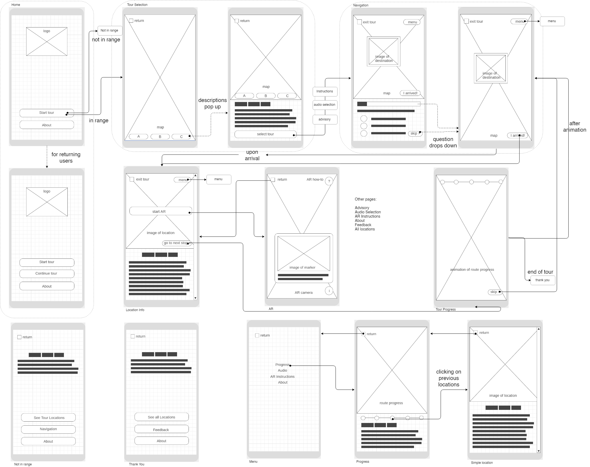
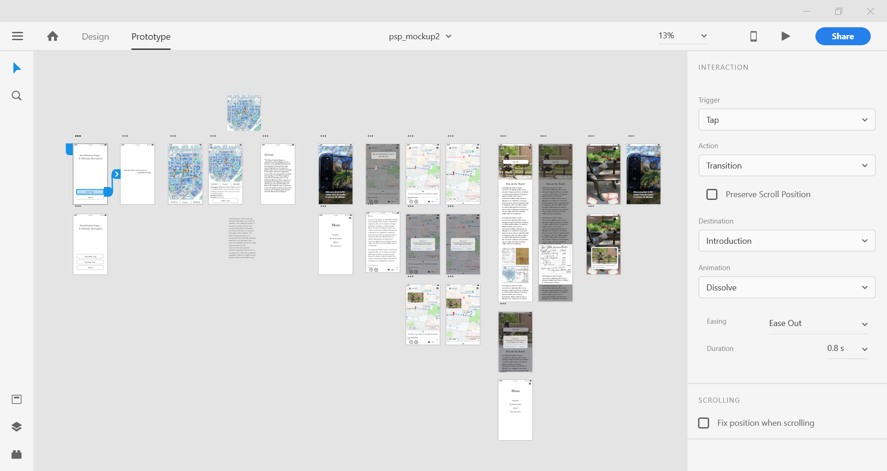
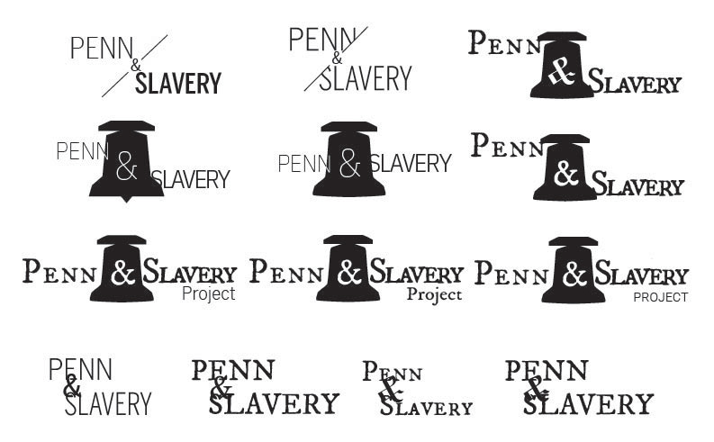
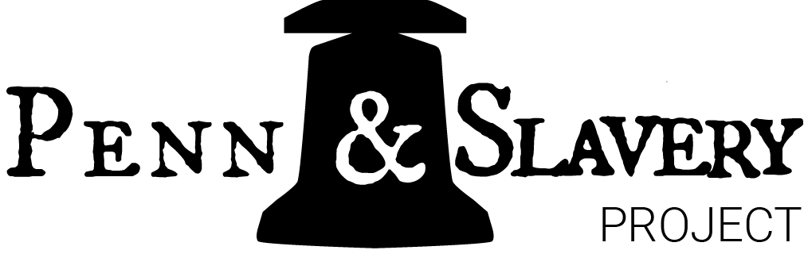

Penn & Slavery Project

Year: 2019
Duration: 2 months
Team Size: 7 (undergrad & grad developers)
Area: Web Design, Web Development
Tools: Adobe XD, Sketch, Wireframe.cc, Unity
Type: Summer Internship
The Penn & Slavery Project was started by a group of UPenn students who were curious about the university’s link to slavery. As the project evolved more and more students and faculty, there was soon a need for an app to educate and spread the information. During summer 2019, I worked with 6 other students on the project’s App Design and Development team. As the only student on the team with graphic and UI design interest, I was responsible for everything ranging from creating wireframes to implementing the UI in Unity.
Problem Statement
The project requirement is ambitious--to create an app that takes users on a historical tour, while incorporating AR into each tour stop. The UI would have to connect many diverse elements, from guiding the user between stops, to displaying information, and to launching the AR. Beyond all this, the app was set to finish development by the end of the summer, giving only around 2 to 3 months time for app design, development, and AR creation.
User Research
Even given the tight time frame, it was important to consider the user before jumping into the design and development stage.
The management stipulated that the users would be people affiliated with the University of Pennsylvania, as well as within the community. But who are those people? The team and I divided the users down to three main target groups--Penn students, Penn faculty, and community members. We especially wanted to dedicate the app to community members of color, who have long voiced out about the damages Penn has afflicted on their community.
But how do we service them without knowing their needs? Wanting to understand the users, I repeatedly urged management to hold a focus group. After some persistence, a focus group was finally organized, involving faculty and students at UPenn as well as community members. Just as expected, the session gave valuable insights, and revealed many issues that would have otherwise been overlooked, such as the use of sensitive terminology. To tackle this problem, an advisory screen was added, and special attention was paid to the wording. The focus group was a great catalyst for more user-focused discussion among the team.
UI Design
My process involved drafting user flows, creating initial wireframe sketches, and instigating repeated team discussions. Through bouncing ideas around, more design questions were raised. We thought about how to clearly direct users to each tour stop, and whether to include a section in between stops to engage the user, such as a quiz question or an audio description. Afterwards, I created a digital wireframe flow to present to the team management, and finally, a low-fidelity prototype.
The initial wireframe sketch incorporates a home screen with two different options--to follow a set tour route, or to tour the stops freely.
The wireframe flow, created using wireframe.cc and draw.io, and finalized after rounds and rounds of revision and refining.
The low-fidelity prototype, created using Adobe XD, and presented to different stakeholders.
Final Design

The high-fidelity design, created in Sketch, and inspired by Carolyn Purnell’s article on color and culture. While western cultures are more chromophobic and prefer minimalistic designs, cultures like Africa and India are chromophilic, reflected in their colorful textiles. Since this project explores the intersection between a Western institution and African roots, I aimed to combine the chromophobic and chromophilic elements.
Info page designs, created using Sketch. This page both introduces supplemental historical info, and launches the AR experience. At the top of the page, I included an image of the stop location to better guide users, as well as a “Start AR” button to serve as a call to action.
Logo prototypes, made in Illustrator. I made many variations, playing with using a diagnol slash to show Penn’s difficult confrontation with its past, and the ampersand to tie Penn and Slavery together.
The final design, chosen by the team, involves a bell. The bell represents both the school bell that one of the slaves who lived at Penn rang between classes, as well as the Liberty Bell in Philadelphia, symbolizing freedom.
Key Takeaways
The Penn & Slavery Project was one of the first major UI design projects I worked on. I learned many things along the way:
1.Be flexible.
Whether it is in an app development process, or a freelance design project, change could happen any time, and could be out of anyone’s control. It’s important to adapt in these situations.
2.Push for change.
Even in a structured environment with multiple teams and tiers of management, it is still important to voice your opinions, because it could make a change. Through persistence, I was able to convince management to hold a focus group, and to start user-focused discussions among the app creation team.
3.Communcation is Key.
Throughout the design process, communication is of utmost importance, whether it is to get feedback from your teammates, to pass on the design to a developer, or to present to management. That is why I converted my designs to easily presentable forms, such as interactable prototypes.
I moved on from designing the product and UI to creating the app interface on Unity as well, and was able to finish the app interface and to document it before handing it off by the end of the summer. I'm proud to announce that after a long development phase, in Feburary of 2021, the app was finally launched! It retained my logo design and much of my UX design. Check out more using the links below!